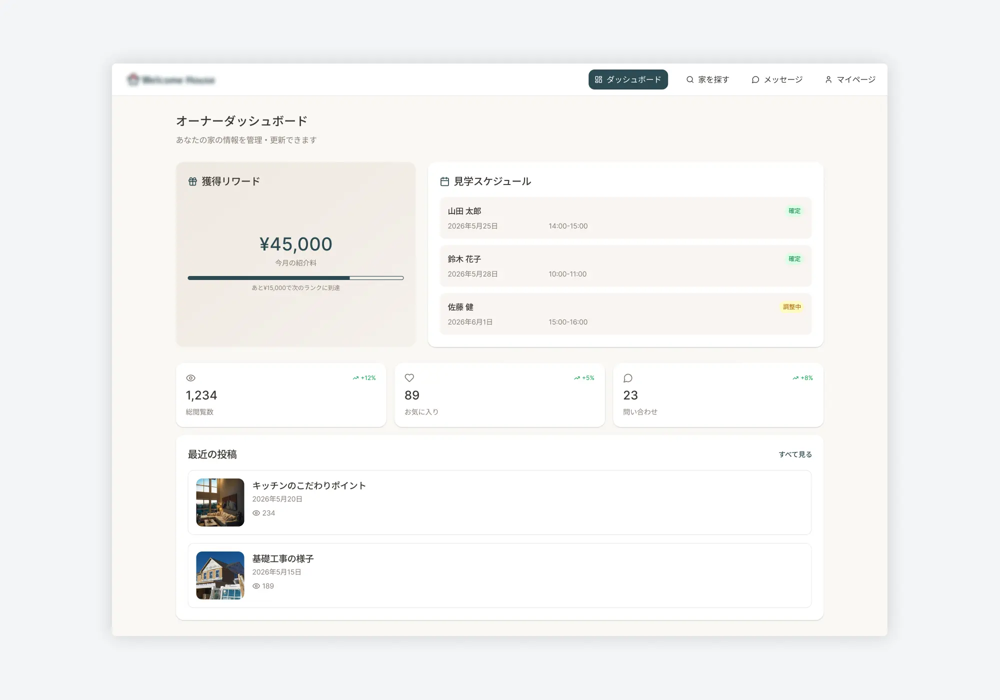
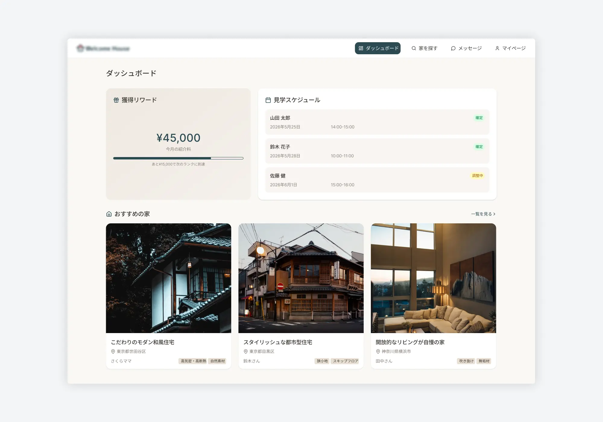
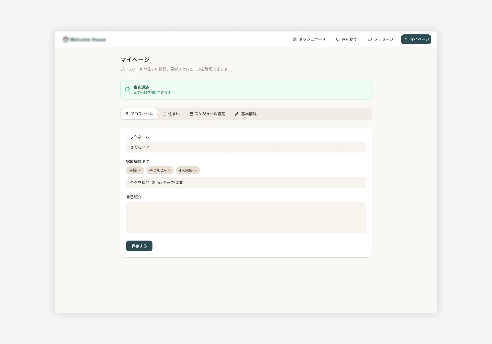

CtoC住宅見学アプリ
- Webアプリ
- 実務案件

注文住宅を建てた「先輩オーナー」と「これから建てたい検討者」を直接繋ぎ、リアルな住宅見学や相談を通じて、理想の家づくりを叶えるCtoC住宅見学アプリの開発に、デザイナーとして携わりました。
- カテゴリー：Webアプリケーション
- 制作種別：実務案件
- 担当領域：情報設計、ビジュアルデザイン
- 使用ツール・言語等：Figma, Rails, Ruby, Sass, Docker等
- 参画期間：5ヶ月
どんなプロダクトか
本プロダクトは、モデルハウスではなく、実際に人が住んでいる注文住宅や建築現場をアプリ上で見学・相談できるCtoCプラットフォームです。 検討者には等身大の情報収集の場を、オーナーにはマイホームの公開による報酬を還元し、工務店やハウスメーカーを巻き込んだ新しい住宅購入の形を実現するサービスです。

プロジェクト概要
自社開発における新規プロダクトの立ち上げプロジェクト。PM1名、エンジニア数名、デザイナー1名（自身）という、少数精鋭のミニマムなチーム体制で開発が進行しました。 ビジネス目標や大枠のコンセプトが定まった段階でプロジェクトへ参画。唯一のデザイナーとして、具体的な機能要件の定義や、詳細な仕様の落とし込みといった工程から関わりました。
担当範囲
- リサーチ・ヒアリング：具体的な要件を詰めるため、対象となる各ロール（オーナー・ビジター）へヒアリングを実施し、ユーザーが抱える潜在的なペインやニーズを把握。
- 要件定義（一部）：大枠の要件を、実際の画面仕様やユーザーフローへと具体化するプロセスへのコミット
- 情報設計：マッチングやスケジュール調整といった複雑な機能の画面遷移、レイアウトの設計
- ビジュアルデザイン：トンマナの定義やデザインの精緻化、UIコンポーネントの構築
最終成果物（一部）







デザインのプロセス
デザインは以下のプロセスで進めました。
- 大枠の要件や戦略把握
- ユーザーインタビュー
- 要件定義
- 情報設計・プロトタイピング
- 検証・改善
- ビジュアルデザイン（デザインの精緻化）
要件把握
プロダクトの目的やビジネス目標、大枠の戦略が定まった段階でジョイン。 まずはこれら上位概念の深い理解と目線合わせに努めました。今回は「迅速にMVP（最小限のプロダクト）をリリースして市場の反応を見る」という強いスピード感が求められたため、リサーチや設計のプロセスをいかに効率化し、開発を加速させるかを念頭に置いて動き出しました。
ユーザーインタビュー
詳細な要件を詰めるため、PMやエンジニアと緊密に連携しながら、対象となる各ロール（オーナー・ビジター）へのユーザーインタビューをクイックに実施。 ユーザーの潜在的なペインやニーズを素早く抽出し、機能として何を実装すべきかという具体的な要件定義の策定に貢献しました。
情報設計・プロトタイピング
策定した要件をもとに、ユースケースを整理。 類似・競合サービスの優れた操作フローをベンチマークしつつ、CtoC特有の複雑な行動フロー、情報の優先順位・グルーピング、画面の階層関係をロジカルに整理しました。 これらを素早く具体的なレイアウトに落とし込み、実際の操作感を検証できるプロトタイプを迅速に作成しました。
検証・UI改善
作成したプロトタイプを用いてユーザーテストを実施。 「ユーザーが迷わずにタスクを達成できるか」を測るため、操作時のつまずきや認知負荷を細かく観察しました。 検証結果から得られた課題に対し、ボタンの配置や動線、マイクロコピー（文言）にいたるまで、確度の高いUIの改善・ブラッシュアップを繰り返しました。
ビジュアルデザイン
検証を経て情報設計が固まった段階で、詳細なトンマナの適用とビジュアルの精緻化を行いました。 なお、プロジェクトの最優先事項が「最速でのデプロイ」であったため、今回はあえて時間を要する厳密なデザインシステムの構築は見送りました。代わりに、実装速度を落とさないための基本的なコンポーネント整理やトンマナのルール化、簡易的なスタイルガイドの作成に留めるなど、状況に応じた柔軟なデザインマネジメントを実践しました。
振り返り
デザイナーが自分1名という環境のなか、ただ画面を作るだけでなく、ビジネス要件をいかに破綻なくUIに落とし込むかを常に意識していました。 特に「新築住宅の購入に向けた見学」や「自宅を他人に公開するオーナーの心理」は、自分自身に経験がなく、当初は直感的なニーズやペインが最もイメージしづらい領域でした。 だからこそ、自分の思い込みや主観に決して頼らず、ユーザーリサーチから得られた客観的なデータや生の声に徹底的に耳を傾け、事実に基づいた画面設計にあたることを強く意識しました。
本プロダクトは、家を見せたい「オーナー」と、見たい「ビジター」という全く異なる2つのロールが交錯するCtoCサービスです。 お互いの心理的ハードルを下げながら、個人間でも迷わずに、かつ「安全に」タスク（見学予約や当日認証）を完了できるシンプルな体験設計には苦労しましたが、未知のドメインであってもロジカルなリサーチと丁寧な情報設計を踏むことで、ユーザーに寄り添った本質的なUIを提供できるという大きな学びを得たプロジェクトです。